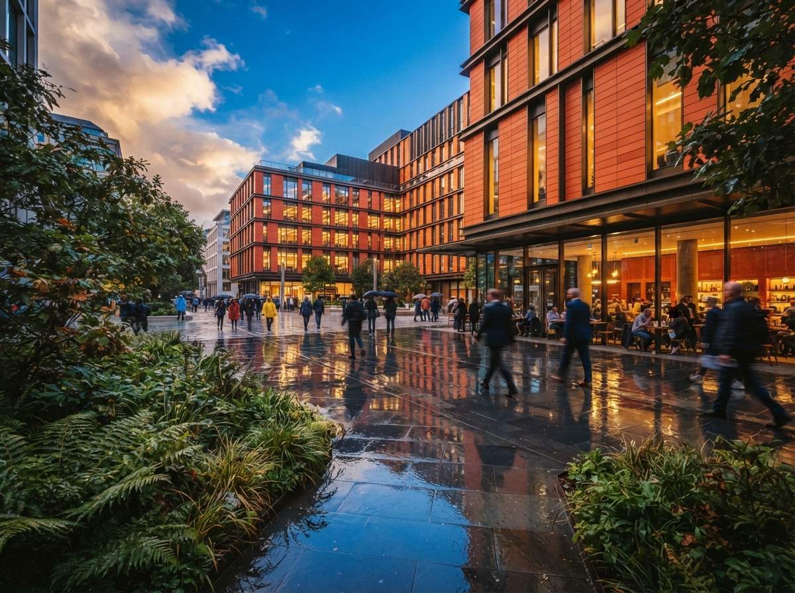
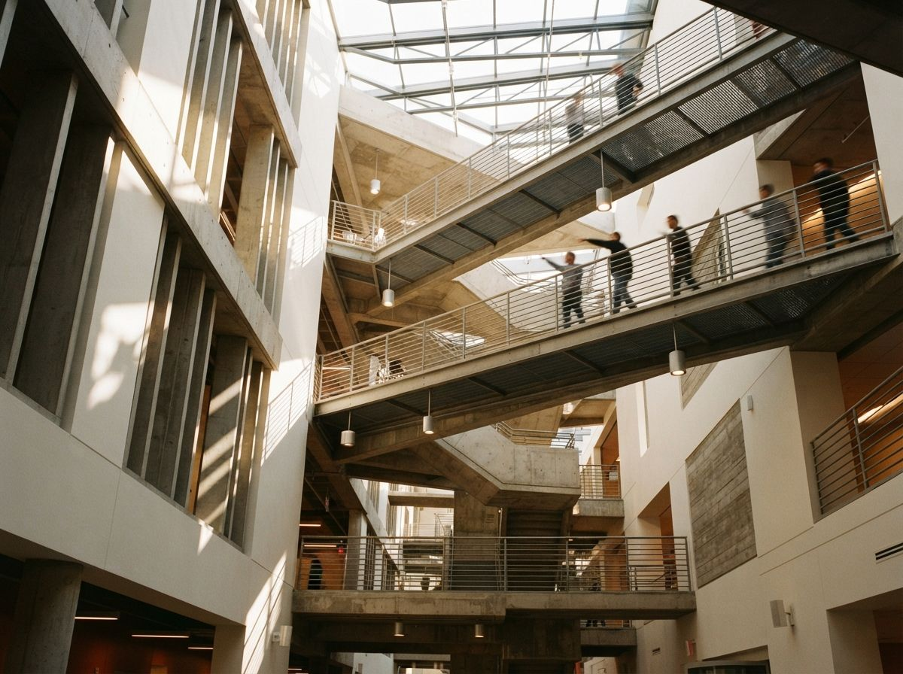

Architecture is an unusually hostile subject for generative motion. A human face can shift slightly between frames and still read as the same person. A facade grid cannot. Viewers know that verticals stay vertical, slabs keep their thickness and windows do not migrate. The same temporal variation that gives foliage life can make a documented building look physically unstable.
That does not make image-to-video a novelty. It makes shot design and review more important. Use it for the motions the method handles well, constrain the parts it tends to invent, and inspect the clip as evidence of a design, not as a mood reel that happened to begin with your render.

Choose the right starting frame
The source still carries most of the clip. Begin with a finished image at the exact aspect ratio and composition you need. Repair doubled people, broken railings, illegible signage and suspect reflections before animation. Video does not hide a still-image defect. It repeats the defect across dozens of frames and often gives it somewhere new to go.
Favor views with clear depth layers: foreground planting or furniture, the primary building plane, and a background sky or context layer. Those layers give the model an understandable motion problem. A flat frontal elevation offers no natural parallax, so the generator often creates depth by bending the facade. A wide interior with a strong foreground edge is safer than a tight view full of repeated chair legs and thin mullions.
Write a camera instruction, not a scene rewrite
The prompt should describe one restrained move and the few environmental motions allowed. “Slow dolly forward, locked architecture, subtle tree movement, stable daylight” gives the system a job. “Cinematic luxury arrival, dramatic transformation, dynamic sweeping reveal” invites it to redesign the scene because transformation and drama are easier to synthesize than accurate camera geometry.
State the invariants in ordinary language: fixed facade geometry, unchanged window positions, straight vertical lines, constant materials, no new objects and no people entering frame. Negative instructions are not guarantees, but they define the review target and reduce ambiguity. Save the prompt beside the still and clip so another person can reproduce the attempt.
The safest architectural AI video is not the one with the most motion. It is the one where every moving thing was named before generation.
Match the move to the risk
| Move | Best use | Main failure |
|---|---|---|
| Slow push | Exterior arrival, centered interior | Openings expand as camera advances |
| Short lateral slide | Layered facade or room | Columns detach from background |
| Gentle orbit | Simple massing with clear corners | Unseen side gets invented |
| Locked camera | Weather, light or planting motion | Materials pulse between frames |
| Large fly-through | Nothing design-critical | Entire spatial sequence is fabricated |
Start with three to five seconds. Longer clips increase the distance from the verified source frame, which gives errors time to compound. If the presentation needs twelve seconds, make three short shots with clean editorial cuts. Do not ask one generation to travel around a corner, cross a lobby and arrive in a room the source image never contained.

The frame-by-frame QA pass
1. Check silhouette and primary structure
Scrub from the first frame to the last while watching only the roofline, slab edges, columns and major openings. Pause at the beginning, midpoint and end. Overlay those frames at reduced opacity if the move is nearly locked. Reject the clip when a documented edge changes independently of perspective.
2. Check repeated elements
Mullions, balusters, brick courses, louvers and ceiling slats expose temporal errors quickly. Count a short run in three frames. Look for elements that merge, split or change spacing. A clip can feel smooth at playback speed while dropping every sixth baluster.
3. Check materials and reflections
Watch one patch of glazing, one opaque finish and one reflective surface. Color and roughness should remain stable unless the light itself is meant to change. Reflections may move with the camera, but the objects being reflected should not appear from nowhere. Glass is the common point where plausible motion becomes a different scene.
4. Check context and life
People should keep their limbs, clothing and direction. Trees can move, but trunks should not walk. Cars should not stretch or change model. Neighboring buildings are part of the architectural claim too. A perfect subject building does not rescue a context block that gains windows halfway through the shot.
5. Watch without sound
Music can persuade a reviewer that a clip is coherent. Mute it, play at half speed and reverse it. Reverse playback makes growing objects and drifting edges easier to notice. Then view once at delivery size, because compression can hide a defect on a phone that remains obvious on a presentation screen.
Use a release gate
Give every clip one of three labels. Design-faithful means geometry, materials and context remain consistent enough to represent the project. Atmospheric only means the building reads correctly at normal speed but contains small changes, so it may support a mood sequence and must not be used to explain a design decision. Reject means primary geometry, openings, access, structure or approved materials change.
Record the label, source still, model version, prompt, generation settings and reviewer. If the clip goes to a client, archive the exact delivered file. This is less bureaucracy than it sounds. A six-line record prevents the team from later mistaking an atmospheric experiment for verified project representation.
Set the gate before generation, not after the team falls in love with a clip. Identify the five lines or objects that cannot change, assign a reviewer who did not make the video, and agree on the delivery context. A social teaser can tolerate a different threshold from a planning presentation, but the threshold must be explicit. “It looks convincing” is not a release criterion.
Repair or regenerate?
Use conventional editing for a brief local defect when the rest of the motion is sound: a single flicker, a one-frame edge break or an unwanted object near the crop. Regenerate when the camera path itself causes geometry drift, when repeated elements change across many frames or when the unseen side of the building is invented. Frame-by-frame repair of a structural error is usually slower than producing a shorter, safer move.
Do not use interpolation to solve bad geometry. Interpolation smooths the transition between frames, including the transition into the mistake. Upscaling makes the same mistake sharper. Motion tools can improve cadence and resolution after the design has passed review, but neither substitutes for a stable generation.
Our take
Image-to-video is most useful in architecture as controlled motion around a verified still, not as a replacement for a modeled animation. It can add a slow arrival to a competition board, give planting and light a little life, or create a clean transition between presentation sections. It is a poor instrument for proving circulation, room sequence, clearance or any view the project team has not modeled.
The distinction should shape the budget. Use a real-time or offline 3D renderer when the camera path carries design information. Use image-to-video when the still carries the information and motion adds attention. That rule keeps the fast tool fast and stops a six-second clip from quietly designing sixty new frames.
Approve the move only after the building survives it.
Written from the 14 July 2026 intel sweep, which surfaced Veras image-to-video alongside broader coverage of AI-assisted architectural visualization workflows.